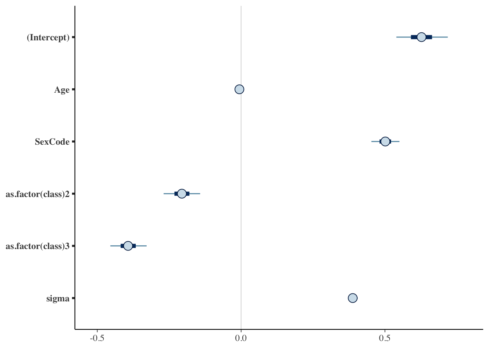
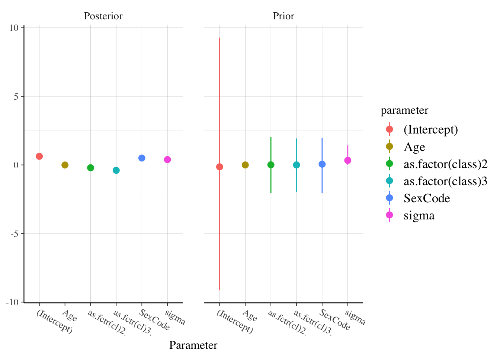
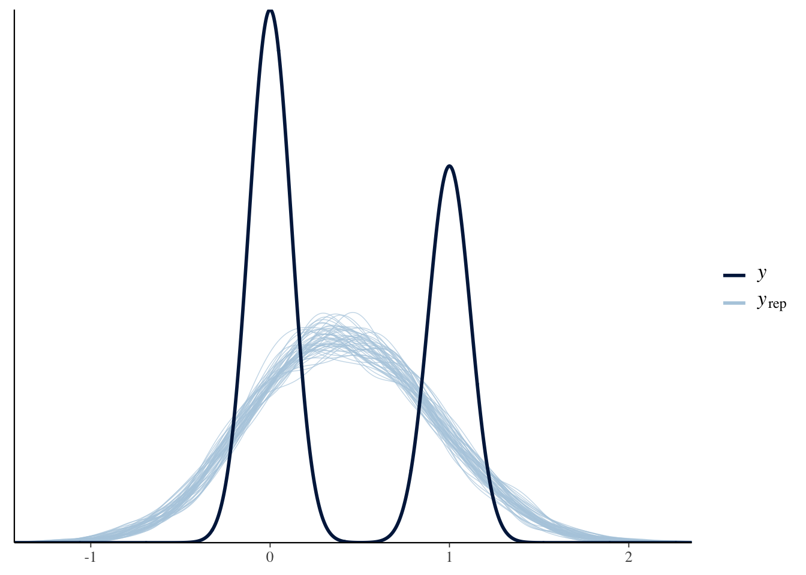

Module 6: Intro to Bayesian Methods in R
Conceptual Introduction
Thought Experiment
Question
Imagine I’m conducting a raffle. I have a large bowl, and inside of it are many raffle entries, each with different numbers on them.
Let the variable x represent the number drawn from the bowl.
Before reaching into the bowl, I want to know:
‘’What is the probability that I’m going to pick up a number less than 10 from the bowl?’’
That is, what is \(p(x \leq 10)\)?
- Does this probability change if I tell you that all the numbers in the bowl have at least 3 digits (ie are \(\geq 100\))?
Answer
Classical Statistics: No.
Probability is defined as: \(\lim_{n \rightarrow \infty} \frac{n_S}{n}\), where \(n\) is the number of times I repeat the experiment and \(n_S\) is the number of times a number \(x \leq 10\) is drawn.
\(p(x \leq 10)\) was always equal to zero, all that changed was your knowledge of the experiment.
Bayesian Statistics: Almost certainly.
Probability is a measure of subjective belief about how likely an event is, based on prior understanding and new information.
Prior \(\rightarrow\) Information \(\rightarrow\) Posterior
Epistomological difference
Bayesian statistics integrates the epistemological uncertainty of statistical estimation into its core procedures. It’s fundamental goal is to assess and improve the accuracy of one’s beliefs based on a set of identifying statistical assumptions.
Classical statistics attempts to instead conduct inference on the (unknown) underlying reality, based on its own set of identifying assumptions.
NOT mutually exclusive
Bayes Rule
The cornerstone of the Bayesian approach (and the source of its name) is the conditional likelihood theorem known as Bayes’ rule.
In its simplest form, Bayes’ Rule states that for two events and A and B (with \(P(B) \neq 0\)): \[ P(A|B) = \frac{P(B|A)P(A)}{P(B)} \]
Or, if A can take on multiple values, we have the extended form:
\[ p(A_i|B) = \frac{p(B | A_i) P(A_i)}{\sum_j P(B|A_j)P(A_j)} \]
Inference using Bayes’ Rule
Adapting Bayes’ Rule to the case of a parameter value, \(\theta\) and observed data y, we have:
\[ p(\theta \mid y) = \frac{f(\theta, y)}{f(y)} = \frac{f(y\mid\theta)p(\theta)}{ \int f(y \mid \theta) p(\theta) d\theta} \underbrace{\propto}_{\text{proportional to}} f(y|\theta)p(\theta) \]
Adding a bit of terminology:
- \(p(\theta)\) is the prior distribution: our initial subjective belief about the probability distribution of \(\theta\).
\(f(y|\theta)\) you may recognize from Maximum Likelihood estimation as:
- \(f(y | \theta) = \prod_{i=1}^n f(y_i |\theta) = \mathcal{L} (\theta)\), the likelihood function.
Finally, \(p(\theta)|y)\) is our posterior (post-experiment) belief about the probability distribution of \(\theta\).
\[ \overbrace{p(\theta \mid y)}^{\text{posterior}} = \frac{\overbrace{f(y\mid\theta)}^\text{likelihood} \overbrace{p(\theta)}^\text{prior}}{\underbrace{\int f(y \mid \theta) p(\theta) d\theta}_\text{average likelihood}} \underbrace{\propto}_{\text{proportional to}} \overbrace{f(y|\theta)}^{likelihood} \overbrace{p(\theta)}^{prior}\]
Hence we have the basic statement:
\[ Posterior \propto Likelihood \times Prior \]
- This is commonly summarized as saying that the posterior belief is a compromise between the data and prior belief.
Priors
Given this compromise with prior beliefs, Bayesian analysis is often attacked as subjective and a lot of emphasis is placed on the role of prior beliefs. But fear not!
First, as the data sample increases, the data becomes the determining factor of the posterior probability.
Moreover, if desired, we can easily specify priors that have no effect on the posterior estimates.
Types of Priors
Different types of priors include:
Uninformative (or “flat”) priors: Priors that have no impact on posterior values (ie assuming total ignorance about the possible parameter value).
- A classic uninformative prior is the uniform prior, which treats all possible parameter values as equally likely: \(p(\theta) = c \text{ } \forall \theta \in \Theta\)
Informative priors: Priors where we use prior knowledge to specify a prior with a best-guess of the prior mean and distribution for a parameter value.
Weakly informative or regularizing priors: Priors which are deliberately less informative than our actual knowledge, affecting estimates less than informative priors but at least incorporating very conservative information into the production of posterior estimates.
Intuition about priors
Think for instance of inference about possible life expectancy:
We could specify an uninformative prior that says allows for any possible lifespan (even living to 1 million years old).
We could specify some skewed normal distribution that approximates our current estimates of the distribution of current lifespans.
Or we could specify some weaker prior that for instance allows life expectancy to be more dispersed and ages to reach, say 150 or 200 years old.
- Weakly informative priors don’t use our best understanding of life expectancy, but at least “tells” our analysis that some possibilities are very implausible.
In almost all circumstances, a weak prior should be preferred.
Priors Example:

From van de Schoot et al 2014
Bayesian Computation
One major feature of Bayesian inference that I haven’t mentioned so far is the intractability of analytic solutions for estimating posterior distributions in most circumstances.
Recall: \[ p(\theta \mid y) = \frac{f(\theta, y)}{f(y)} = \frac{f(y\mid\theta)p(\theta)}{ \int f(y \mid \theta) p(\theta) d\theta} \]
For models that are more complex or that involve high-dimensional data, closed-form solutions are not available for the integral in the denominator.
Hence, Bayesian analysis instead typically relies on numerical methods, usually Markov Chain Monte Carlo (MCMC) methods.
MCMC Methods
This method relies on sequentially sampling values of \(\theta\) from an approximation of the posterior distribution and then correcting the approximation to create better subsequent samples.
Because the approximated distribution used in 1 step relies on the sample from the previous step, the simulation forms a Markov chain.
A critical property then is convergence: Have our simulations converged to the real target distribution?
- Typically instead of running one really long “chain”, researchers use multiple short chains.
- The aggregate can not only converge faster, but can provide a better sense of convergence through the noisiness between multiple chains.
- Typically instead of running one really long “chain”, researchers use multiple short chains.
Hypothesis Testing in Bayesian Analysis?
Another point of divergence for Bayesian vs. frequentist data analysis is even more dramatic:
Largely, there is no place for null-hypothesis significance testing (NHST) in Bayesian analysis
Bayesian analysis has something similar called a Bayes’ factor, which essentially assigns a prior probability to the likilihood ratio of a null and alternative model and then estimates it’s posterior probability.
But Bayes factors are heavily criticized by leading Bayesians like Andrew Gelman and Donald Rubin, because it is highly sensitive to prior probabilities and model structures, among other issues.
Instead, analysis is oriented around estimation of the posterior distribution of parameters (or predictions).
Bayesian Inference with Credible Intervals
Without NHST to tell us if our results are significant, does that mean we just get point estimates and no way to assess how reliable they are? No!
Recall that we are estimating the posterior distribution of a parameter (or predicted outcome).
Hence, we can easily produce a 95% interval for the parameter, simply using the quantiles of the posterior CDF.
In Bayesian analysis, we replace the 100(\(1-\alpha\))% frequentist confidence interval with the 100(\(1-\alpha\))% credible interval.
A credible interval, however, has a much more appealing interpretation than a confidence interval.
A confidence interval has the interpretation that, in repeated samples, the true parameter lies within the confidence region 95% of the time.
A credible interval is what people think a confidence interval should mean: there is a 95% chance that the true value lies within the 95% credible interval.
Bayesian Regression with rstanarm
Stan
Probably the best approach to doing Bayesian analysis in any software environment is with rstan, which is an R interface to the Stan programming language designed for Bayesian analysis.
To use rstan, you will first need to install RTools from this link.
Then install the package rstan from RStudio (make sure to set
dependencies=TRUEwhen installing).
Parallelization support
Once you’ve setup rstan, there is one more thing you should typically do: tell it to run on multiple cores.
- rstan includes support for basic parallelization that speeds up execution tremendous for larger / more complex regressions.
library(rstan)
rstan_options (auto_write=TRUE)
# Run on multiple cores
options (mc.cores=parallel::detectCores ()) A Stan regression example
Now that you’re hopefully excited about rstan, let’s look at an example of a rstan regression from the package documentation:
# Create schools.stan --------------------------
data {
int<lower=0> J; // number of schools
real y[J]; // estimated treatment effects
real<lower=0> sigma[J]; // s.e. of effect estimates
}
parameters {
real mu;
real<lower=0> tau;
vector[J] eta;
}
## Still creating schools.stan
transformed parameters {
vector[J] theta;
theta = mu + tau * eta;
}
model {
target += normal_lpdf(eta | 0, 1);
target += normal_lpdf(y | theta, sigma);
}
# End of schools.stan --------------------------
## Run Stan regression using schools.stan
fit1 <- stan(
file = "schools.stan", # Stan program
data = schools_data, # named list of data
chains = 4, # number of Markov chains
warmup = 1000, # number of warmup iterations per chain
iter = 2000, # total number of iterations per chain
cores = 2, # number of cores (using 2 just for the vignette)
refresh = 1000 # show progress every 'refresh' iterations
)Rstanarm: making RStan easy
Oops! That was a lot of code! And there’s still a bit more left out. Luckily, there are a couple of packages that exist to make your life easier:
First, there is rstanarm, which was created by the developers of Stan and rstan to make running a Bayesian regression with rstan much more like you would run a normal frequentist regression.
Another very similar package to rstanarm is brms, which also makes running Bayesian regression much simpler and ‘R-like’.
Short comparison of rstanarm and brms
rstanarm is faster, has better posterior checking, and is a bit simpler to use.
brms is generally a bit more flexible, with support for some regression types missing in rstanarm, more flexible specification of priors, and support for more types of error correlational structures.
- My sense is that rstanarm is the more popular choice, so that’s what we’ll use here.
Using rstanarm
With rstanarm, most regressions you run using the function stan_glm()
- Since generalized linear models (GLMs) incorporates models like linear regression, probit, logit, Poisson, binomial, exponential, etc)
Syntax:
mybayesreg <- stan_glm(y ~ X1 + x2 + x3 ...,
family = myfamily, data = mydata,
prior = myprior)Options with stan_glm
Family (with a possible link argument needed as well) defines the type of regression you want:
- Linear regression:
family = gaussian - Logit:
family = binomial(link = "logit") - Probit:
family = binomial(link = "probit") - Poisson:
family = poisson - More options can be read from the main GLM page
Prior distributions:
- Flat priors can be set by using
prior = NULL [Weakly] Informative Priors can be specified by using
prior =with one of:- normal, student_t, cauchy, laplace and more found here
A Titanic survival example with rstanarm
data(Titanic)
# Display titanic data
glimpse(Titanic,width = 50)## Observations: 1,313
## Variables: 6
## $ Name <fct> "Allen, Miss Elisabeth Walton"…
## $ PClass <fct> 1st, 1st, 1st, 1st, 1st, 1st, …
## $ Age <dbl> 29.00, 2.00, 30.00, 25.00, 0.9…
## $ Sex <fct> female, female, male, female, …
## $ Survived <int> 1, 0, 0, 0, 1, 1, 1, 0, 1, 0, …
## $ SexCode <int> 1, 1, 0, 1, 0, 0, 1, 0, 1, 0, …# Reformat Class
Titanic$class <- str_extract(Titanic$PClass, "[0-9]")
TitanicLinear <- stan_glm(Survived ~ Age +
SexCode + as.factor(class),
data = Titanic, family = gaussian)
summary(TitanicLinear)##
## Model Info:
##
## function: stan_glm
## family: gaussian [identity]
## formula: Survived ~ Age + SexCode + as.factor(class)
## algorithm: sampling
## priors: see help('prior_summary')
## sample: 4000 (posterior sample size)
## observations: 756
## predictors: 5
##
## Estimates:
## mean sd 2.5% 25% 50% 75% 97.5%
## (Intercept) 0.6 0.1 0.5 0.6 0.6 0.7 0.7
## Age 0.0 0.0 0.0 0.0 0.0 0.0 0.0
## SexCode 0.5 0.0 0.4 0.5 0.5 0.5 0.6
## as.factor(class)2 -0.2 0.0 -0.3 -0.2 -0.2 -0.2 -0.1
## as.factor(class)3 -0.4 0.0 -0.5 -0.4 -0.4 -0.4 -0.3
## sigma 0.4 0.0 0.4 0.4 0.4 0.4 0.4
## mean_PPD 0.4 0.0 0.4 0.4 0.4 0.4 0.5
## log-posterior -364.8 1.7 -368.9 -365.7 -364.5 -363.6 -362.5
##
## Diagnostics:
## mcse Rhat n_eff
## (Intercept) 0.0 1.0 2294
## Age 0.0 1.0 3168
## SexCode 0.0 1.0 3953
## as.factor(class)2 0.0 1.0 2815
## as.factor(class)3 0.0 1.0 2502
## sigma 0.0 1.0 4174
## mean_PPD 0.0 1.0 3765
## log-posterior 0.0 1.0 1837
##
## For each parameter, mcse is Monte Carlo standard error, n_eff is a crude measure of effective sample size, and Rhat is the potential scale reduction factor on split chains (at convergence Rhat=1).
Credible intervals
You can also easily get print the credible intervals with the function posterior_interval()
posterior_interval(TitanicLinear, prob=0.95)## 2.5% 97.5%
## (Intercept) 0.524131299 0.733029097
## Age -0.008178664 -0.003942273
## SexCode 0.443016245 0.561969161
## as.factor(class)2 -0.283879669 -0.133217453
## as.factor(class)3 -0.467082496 -0.318925289
## sigma 0.369328091 0.408310633Graphical credible intervals
plot(TitanicLinear)
Plotting the posterior distribution
You can also easily plot the posterior distribution of a parameter in R.
Titanic_posterior <- TitanicLinear %>% as_tibble() %>%
rename(sec.class = "as.factor(class)2",
third.class = "as.factor(class)3")
ggplot(Titanic_posterior, aes(x=third.class)) +
geom_histogram()Juxtaposing the prior and the posterior
posterior_vs_prior(TitanicLinear)
Model Testing
Model testing basics
There are a number of different regression diagnostics after performing Bayesian regression to help infer if the model converged, how well it performs, and even compare between models.
Today, we’ll cover some of them included with rstanarm as well as the very useful shinystan package.
Graphical posterior predictive analysis
To check the predictive accuracy of the posterior distribution, you can use the function pp_check(), which plots simulated y values from the posterior distribution against the actual values of y.
pp_check(TitanicLinear)
Regularization and Predictive Accuracy
A critical issue in both Bayesian and frequentist estimation is how to balance predictive accuracy with parsimony. Put another, the researcher should be concerned with not overfitting the data while still creating a compelling model.
The basic approach in frequentist method is to use the Akaike information criterion (AIC):
Expected Log Predictive Density: \[\hat{elpd}_{AIC} = \log p(y | \hat{\theta}_{MLE}) - k\]
- Where \(\theta_{MLE}\) is the maximum likelihood estimator of \(\theta\),
- \(\log p(y | \hat{\theta}_{MLE})\) is the log likelihood given \(\theta_{MLE}\),
- and k is the number of parameters in the model.
Deviance information criterion
The most basic Bayesian adaptation of the AIC is the Deviance information criterion (DIC):
\[\hat{elpd}_{DIC} = \log p(y | \hat{\theta}_{Bayes}) - p_{DIC}\]
- Where \(\theta_{Bayes}\) is the mean posterior estimate and
- \(p_{DIC}\) is the number of “effective parameters in the model” using a data-biased correction
Watanabe-Akaike information criterion
An improvement over the DIC is the Watanabe-Akaike information criterion:
\[\hat{elpd}_{WAIC} = \sum_{i=1}^{n} \log p(y_i) - \sum_{i=1}^{n} \log V \Big[p(y_i) \Big]\]
The WAIC has the advantages of:
Averaging the likelihood over the posterior distribution rather than using the mean
Does not assume a multivariate Gaussian posterior distribution, as does the DIC (and AIC)
WAIC example
waic(TitanicLinear)##
## Computed from 4000 by 756 log-likelihood matrix
##
## Estimate SE
## elpd_waic -360.5 19.4
## p_waic 6.1 0.3
## waic 721.0 38.7Leave One Out Cross-Validation
Another method alongside WAIC for comparing out-of-sample predictive ability is to apply leave-one-out cross-validation (LOO).
- LOO assesses predictive ability of posterior simulations in which the data is iteratively partitioned into training and prediction sets.
Expected Log Predictive Density:
\[\hat{elpd}_{LOO} = \sum_{i=1}^{n} \log p(y_i | y_{-i})\]
LOO example
loo(TitanicLinear)##
## Computed from 4000 by 756 log-likelihood matrix
##
## Estimate SE
## elpd_loo -360.5 19.4
## p_loo 6.1 0.3
## looic 721.0 38.7
## ------
## Monte Carlo SE of elpd_loo is 0.0.
##
## All Pareto k estimates are good (k < 0.5).
## See help('pareto-k-diagnostic') for details.Comparing models
Titanic_probit <- stan_glm(Survived ~ Age +
SexCode + as.factor(class),
data = Titanic, family = binomial(link=probit))
Loo_probit <- loo(Titanic_probit)
Titanic_logit <- stan_glm(Survived ~ Age +
SexCode + as.factor(class),
data = Titanic, family = binomial(link=logit))
Loo_logit <- loo(Titanic_logit)
# ELPD_diff>0 indicates more support for 2nd model
compare_models(Loo_probit, Loo_logit)##
## Model comparison:
## (negative 'elpd_diff' favors 1st model, positive favors 2nd)
##
## elpd_diff se
## 1.2 0.8Many more diagnostics with shinystan
Probably the most popular diagnostic for Bayesian regression in R is the functionality from the shinystan package.
- Shinystan launches a “Shiny” web application to show you model diagnostics, so it can’t be done inside of a RMarkdown document (but works just fine if called from the console.)
# Do in console not RMarkdown
launch_shinystan(TitanicLinear)